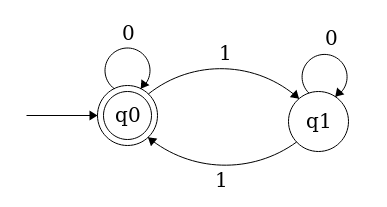

Determinstic Finite Automata in Go
I wrote this post a few years back with the intention of covering DFAs, PDAs, and Turing Machines. Clearly, I never got that far, but thought it might be interesting or useful to some people even if it just covered DFAs. This was supposed to be a blog post to go along with a Go package I was working on called gocompute, which was meant to contain a bunch of tools for messing around wth computability theory (and have a full test suite). I only ever implemented DFAs (and some cool DFA composition stuff), but feel free to make a PR ;).
A few semesters ago, I took MIT's 18.404 - Introduction to the Theory of Computation taught by Michael Sipser. Sipser is an incredibly good lecturer (my evaluation having regrettably skipped a number of his lectures), and teaches a super interesting class, basically covering the foundations of computability & complexity theory. What's this post about, then? Ostensibly, a tiny exploration into these topics, through the lens of implementing some tools of computability theory in Go.
Roughly, computability theory addresses the question of "what is computable?", where complexity theory asks, given a problem, "what resources are needed to compute this?". This is a pretty high level, handwavy description of two incredibly deep fields, but it's enough to give a good picture. We're going to be focusing mainly on (very basic) computability theory here. A good starting place might be defining what exactly the word "computable" means.
A decision problem is a question whose answer is yes or no. Let's call a language  a set of strings over an alphabet
a set of strings over an alphabet  , which is a finite set of symbols, and some rules by which strings in the language must abide. For example, the language of all strings over the alphabet
, which is a finite set of symbols, and some rules by which strings in the language must abide. For example, the language of all strings over the alphabet  of the form
of the form  is (in set-builder notation) the set
is (in set-builder notation) the set  . Note that setting
. Note that setting  yields a valid, but empty, string in the language. This is a relatively common occurence, and we denote this string with
yields a valid, but empty, string in the language. This is a relatively common occurence, and we denote this string with  , the empty string, which is apparently present in our language . The concept might be counter-intuitive at first, but compare it to '\0' in C or "" in Python.
, the empty string, which is apparently present in our language . The concept might be counter-intuitive at first, but compare it to '\0' in C or "" in Python.
Now, given a language and a string  , we can formulate the desicion problem: "Is in the language "? In our language above, for example, the answer is clearly yes for the string
, we can formulate the desicion problem: "Is in the language "? In our language above, for example, the answer is clearly yes for the string  , and no for
, and no for  . Given a string and a language we want to test its membership in, wouldn't it be nice if there were some easy way to do so? Let's introduce our first model of computation, deterministic finite automata, or DFAs, which are able to test string membership in a class of languages known as regular languages.
. Given a string and a language we want to test its membership in, wouldn't it be nice if there were some easy way to do so? Let's introduce our first model of computation, deterministic finite automata, or DFAs, which are able to test string membership in a class of languages known as regular languages.
Deterministic Finite Automata
A deterministic finite automaton, intuitively, is a collection of states and transitions between them. One state is deemed the start state, and others are accept states. Beginning in the start state, one moves from state to state along the transitions, which are determined by the current symbol being read off the input string. If, when the input string is done being read, the DFA is in an accept state, we accept the input string, and say the DFA recognizes the string. If the DFA ends in a non-accept state, we say the DFA rejects the string. A picture says a thousand words, so I recommend you follow the above link to the Wikipedia entry and take a look. We say a DFA recognizes language if for every  , the DFA recognizes . The set of strings recognized by a DFA
, the DFA recognizes . The set of strings recognized by a DFA  is written
is written  , and is called the language of . We call a language regular if there exists some DFA such that
, and is called the language of . We call a language regular if there exists some DFA such that  .
.
Now, if we have some language and some DFA such that , we can use the DFA to answer our desicion problem of whether or not some arbitrary finite string is in the language , since the only recognizes those strings in . Before we try to whip up some code that simulates the action of a DFA, we need a more formal model of exactly how a DFA works.
Formally, a DFA is a 5-tuple  , where
, where
 is the finite set of states
is the finite set of states- is the finite set of input symbols, the alphabet
 , the transition function
, the transition function the start state
the start state , the set of accept states
, the set of accept states
We say that accepts a string  over if there exists a sequence of states in ,
over if there exists a sequence of states in ,  such that
such that


Hopefully you enjoyed me parroting Wikipedia. The formal 5-tuple definition of a DFA should make some intuitive sense. The definition of how a DFA accepts a string should also make sense - a string is accepted only if the sequence of states generated by following the transition function ends with an accept state.
Now, let's think about how we could implement this. Everything is relatively straightforward, except for implementing the transition function. There are a bunch of options, but at the end of the day, the user still has to specify  transitions, which is kind of a pain. To simplify things, we assume that the states of a DFA are labeled by strings, and the alphabet consists of strings. Then, we represent a DFA as a struct with fields of type set (click through for implementation) for the set of states, alphabet, and accept states; the start state is represented by a string. As for the transition function, we opt to use a map of maps, or more specifically, a map of states to a map of alphabet symbols to states. For a given state
transitions, which is kind of a pain. To simplify things, we assume that the states of a DFA are labeled by strings, and the alphabet consists of strings. Then, we represent a DFA as a struct with fields of type set (click through for implementation) for the set of states, alphabet, and accept states; the start state is represented by a string. As for the transition function, we opt to use a map of maps, or more specifically, a map of states to a map of alphabet symbols to states. For a given state  and alphabet symbol
and alphabet symbol  , we can calculate the transition function of the two by looking at
, we can calculate the transition function of the two by looking at  . Here's the struct.
. Here's the struct.
type DFA struct { states *set.Set alphabet *set.Set transition map[string](map[string]string) start string accept *set.Set }
Right now, all we need to do is implement some sort of constructor which can verify some necessary preconditions for the struct (accept is a subset of states, start is in states, transition has a map for every state with an entry for every alphabet symbol...), and a function which, given a string, simulates a DFA on that string and returns a bool for accept/reject.
As far as the constructor goes, we'll leave checking the preconditions as an exercise for the reader. The skeleton for the constructor would then just be
func NewDFA(states, alphabet *set.Set, transition map[string](map[string]string), start string, accept *set.Set) *DFA { return &DFA{states, alphabet, transition, start, accept} }
As for the function to simulate a given DFA on a string, all we have to do is loop over the characters in the string, setting our initial state to the start state, and iteratively update our current state based on the output of the transition function. When we're done looping through the string, if the current state is a member of the set of accept states, we accept (return true), else return false. Note also that a precondition of this function is that all the characters in the input string must be members of the input alphabet.
func (d DFA) Simulate(w string) bool { currentState := d.start for _, r := range w { currentState = d.transition[currentState][string(r)] } if d.accept.Has(currentState) { return true } return false }
To test this stuff out, copy the following into a file dfa.go in a folder gocompute in your $GOPATH/src directory. Make sure to run
go get gopkg.in/fatih/set.v0
to grab the necessary dependency.
package gocompute import ( "gopkg.in/fatih/set.v0" ) type DFA struct { states *set.Set alphabet *set.Set transition map[string](map[string]string) start string accept *set.Set } func NewDFA(states, alphabet *set.Set, transition map[string](map[string]string), start string, accept *set.Set) *DFA { return &DFA{states, alphabet, transition, start, accept} } func (d DFA) Simulate(w string) bool { currentState := d.start for _, r := range w { currentState = d.transition[currentState][string(r)] } if d.accept.Has(currentState) { return true } return false }
Now, let's test it out. Below you'll find a diagram of the DFA which recognizes the language of strings of 0s and 1s with an even number of 1s. Verify this for yourself. This one's pretty simple, but more complicated diagrams can be a headache to parse.

Initializing all the variables is simple enough. Again, only the transition function is a pain. Whip up a file called main.go in a subdirectory of whereever dfa.go is, and fill it with this bit of code.
package main import ( "fmt" gocomp "gocompute" "gopkg.in/fatih/set.v0" ) func main() { states := set.New("q0", "q1") alphabet := set.New("0", "1") transq0 := map[string]string{ "0": "q0", "1": "q1", } transq1 := map[string]string{ "0": "q1", "1": "q0", } transition := map[string](map[string]string){ "q0": transq0, "q1": transq1, } start := "q0" accept := set.New("q0") d := gocomp.NewDFA(states, alphabet, transition, start, accept) output := d.Simulate("11") //should be true, 2 ones fmt.Println(output) output = d.Simulate("1011") //should be false, 3 ones fmt.Println(output) output = d.Simulate("10000010000110010010110") //should be true, 8 ones fmt.Println(output) }
The above just runs the simulator on some arbitrary values. Plug in whatever you like. Again, verify for yourself that the inputs (namely the transition function) correctly represents the geometry of the above diagram. If you type go run main.go, sure enough, you'll find that it works.
This is a pretty simple example. There are DFAs that are far more complicated, I'm just too lazy to type them up. As a note, DFAs aren't the only kind of finite automata that identify regular languages. An NFA is a nondeterministic finite automaton, which is like a DFA, but the transitions are made nondeterministically. This model of computation might seem more powerful, but NFAs in fact recognize exactly the same class of languages as DFAs. As an exercise - see if you can implement NFAs - either by representing/simulating them explicitly, or constructing the equivalent DFA.
Finite automaton are all well and good, but there are in fact languages that they cannot recognize. Consider the language of strings of the form from earlier. This language is nonregular, in that no DFA can recognize it. In order to recognize this language, some DFA would need a potentially unbounded amount of memory in order to remember how many zeroes it's already seen. This opens us up to a more powerful model of computation, which can recognize a superset of the regular languages, called context-free languages, but I'll leave that for another post.
Hopefully you got something out of this post, and if you're really interested, feel free to check out my Github repo which has a much more robust version of the functionality here along with some other nifty features. I haven't touched it in a while (and my Go is kind of rusty) but feel free to make a PR.